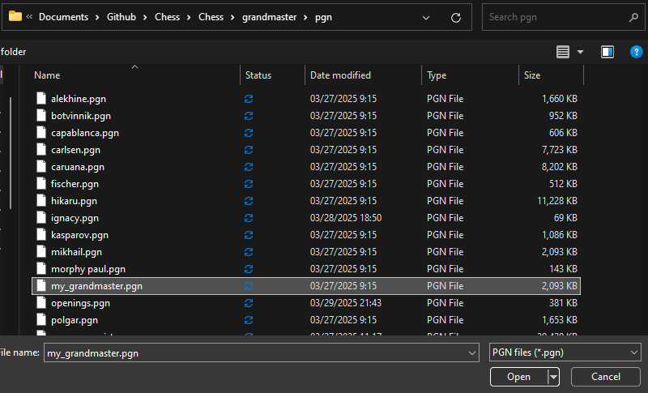
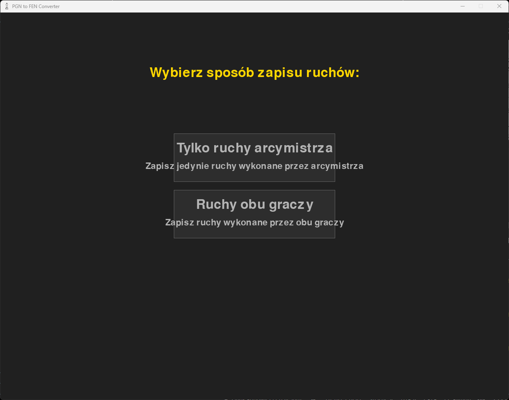
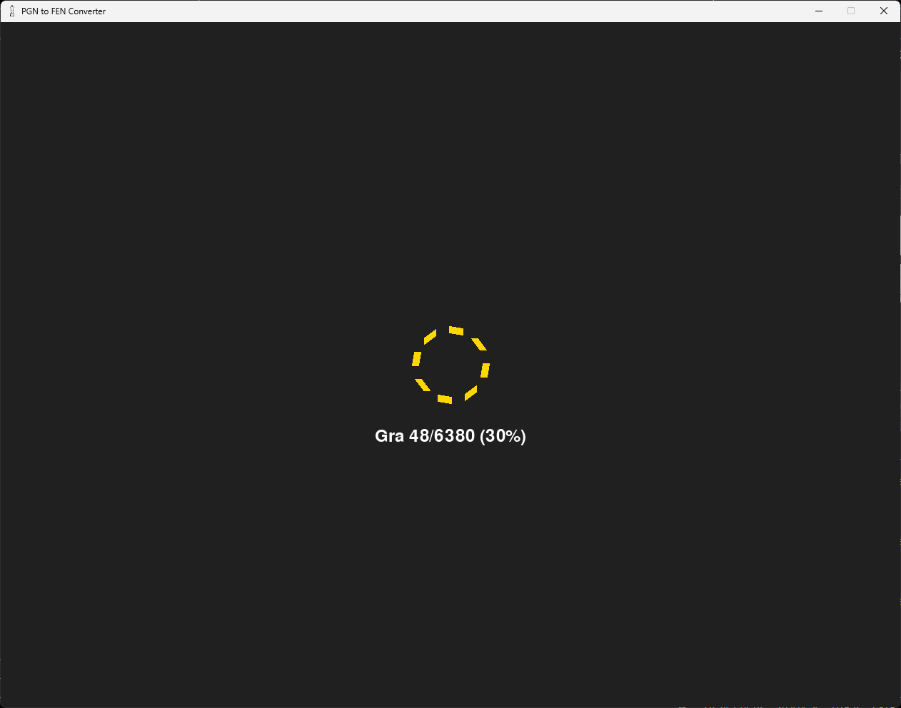

Jeżeli chcemy grać przeciwko arcymistrzowi bazującym na pliku z danymi posunięć, przed rozpoczęciem gry z arcymistrzem trzeba przekonwertować plik PGN na JSON.
Właśnie do tego służy ta funkcja w programie.
Aby przekonwertować swój plik PGN, należy:
- Umieścić plik PGN w folderze /grandmaster/pgn/, a następnie go wybrać, np.:
 Wybrać preferowany przez nas sposób zapisu ruchów, gdy zobaczymy ten dialog:
- Poczekać na zakończenie konwersji przez program:

Plik po konwersji będzie możliwy do odnalezienia w folderze /grandmaster/json/, skąd będzie można użyć go przy grze z arcymistrzem.